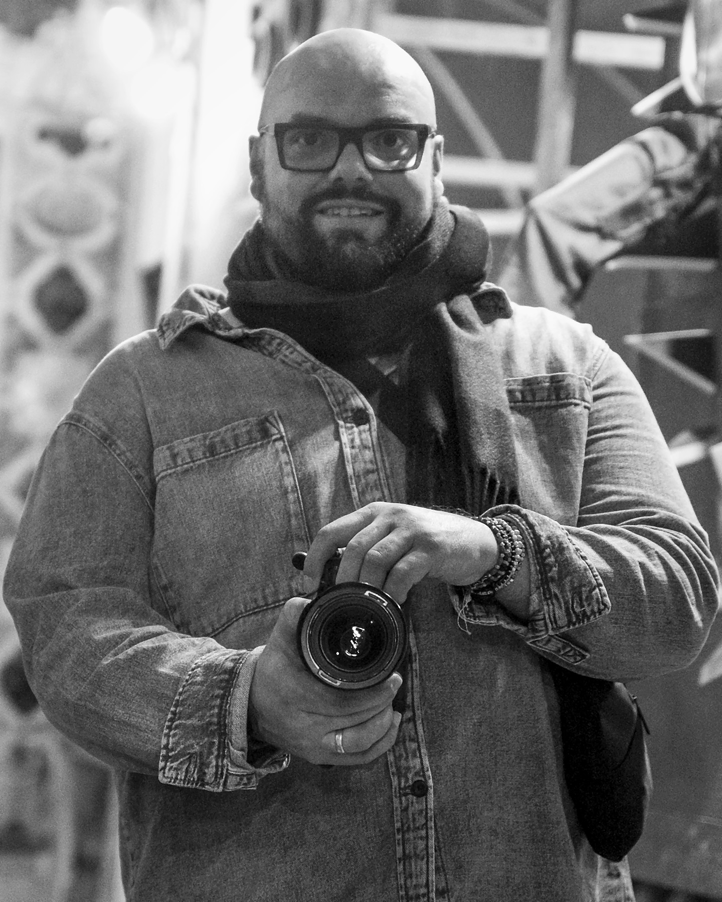

Collecties
Hieronder staan mijn verschillende fotografische richtingen. Elke collectie heeft een eigen ritme, maar samen vormen ze één consistente visuele taal.
Ik werk met aandacht voor compositie, natuurlijk licht, structuur en timing. Niet alles hoeft luid te zijn om visueel sterk te blijven.
Ik zoek naar beelden met rust, spanning, textuur en betekenis. Beelden die niet alleen tonen wat er is, maar ook laten voelen wat er gebeurt.
Portretten
Zwart-wit
Dieren
Macro
Botanisch
Plaatsen & sfeer
Over mij
Ik ben Rafal Wilk. Fotografie is voor mij meer dan het vastleggen van een onderwerp. Het is een manier van kijken waarin aandacht, geduld en gevoeligheid samenkomen.
Ik zoek naar beelden waarin licht niet alleen verlicht, maar richting geeft. Soms ontstaat een sterk beeld in een fractie van een seconde. Soms pas na lang wachten.
Juist in die combinatie van techniek, intuïtie en tijd ligt voor mij de essentie van fotografie als kunstvorm.

Contact
Voor samenwerkingen, vragen of direct contact.